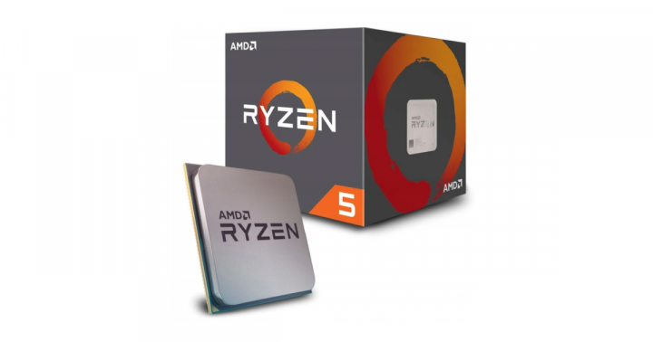

Witamy w Świat Komputerów!
Informacje o procesorach
Często mówi się o tym, że procesor to serce naszego komputera. W tym stwierdzeniu jest naprawdę bardzo dużo racji. CPU odpowiada za analizę wszystkich informacji w naszych systemach. Procesor otrzymuje więc dane, przeprowadza na nich niezbędne obliczenia, a następnie wysyła wyniki do pamięci komputerowych. W razie potrzeby, jest też w stanie oczywiście przechować część z nich na swojej własnej, wbudowanej pamięci podręcznej.